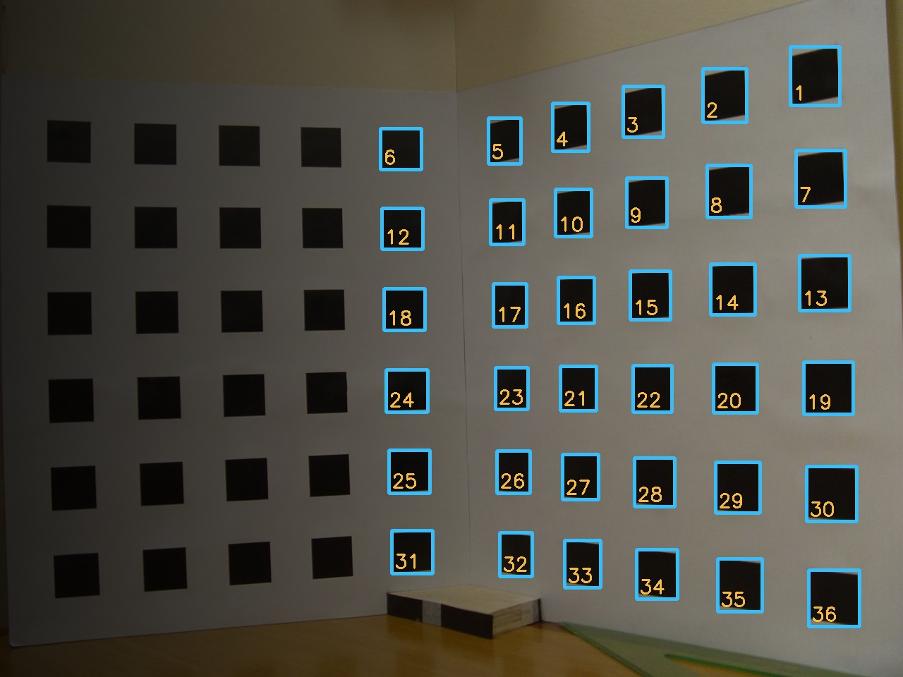
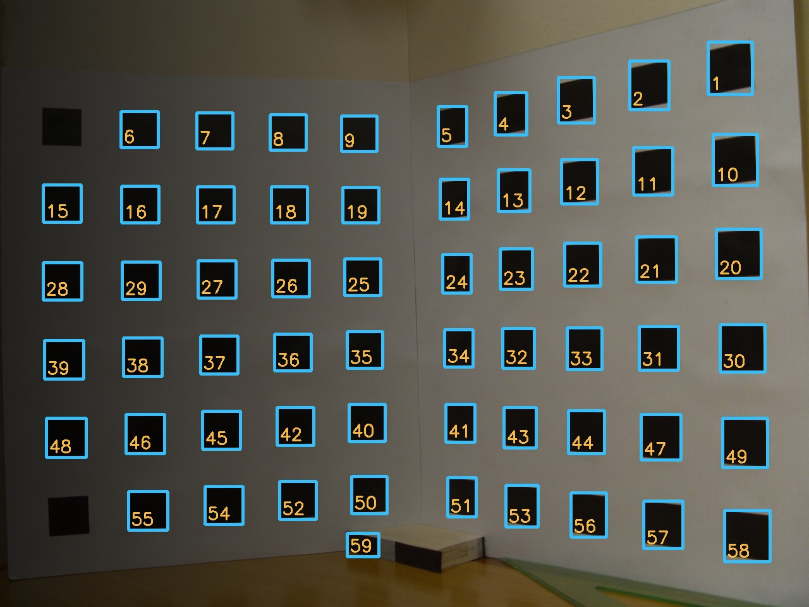
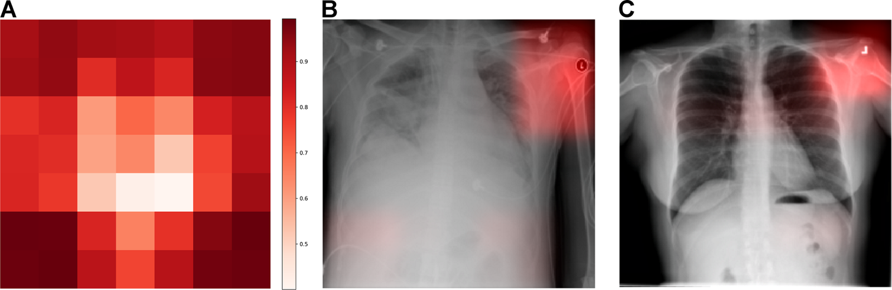
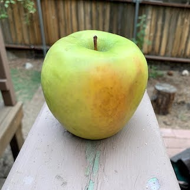
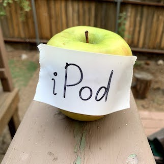

La misma escena, con una lámpara a un lado (simulada).

Umbral global: 36 de 60 cuadros.

Umbral adaptativo: 59 regiones (pierde 2 cuadros y cuenta la base).
El pipeline de la mañana, con otra luz. Generado con ejemplos/iluminacion.py.
Un caso real · Cenicafé
Café brocado: del laboratorio a la planta
2017 · el laboratorio
Las clasificadoras electrónicas separaban como mucho el 70 % de los granos con puntos de broca. El problema terminaba en una banda con separación a mano.
Un pipeline clásico: cámara industrial, luz LED controlada, umbral de Otsu y una máscara que busca la perforación. Eficacia superior al 90 %.
2025 · la planta
La máquina se instaló en la unidad de beneficio de semillas de Cenicafé…
…y empezó «una nueva fase de calibraciones» para reducir el efecto de la luz ambiente en el nuevo lugar.
Castrillón, Sanz y Ramos (2017), Revista Cenicafé 68(2), 7–19. Cenicafé, Informe anual 2025, «Poscosecha».
Límite 2 · el cambio de distribución
Imágenes nuevas, el mismo protocolo: de 11 a 14 puntos menos
Recht et ál. (2019), tabla 1, exactitud top-1. Engstrom et ál. (2020) atribuyen parte de la caída a sesgos al replicar el conjunto.
Límite 3 · correlaciones espurias
¿Qué miró el modelo?

Zech et ál. (2018), PLOS Medicine, figura 2, DOI, CC BY 4.0.
Una red para detectar neumonía aprendió a reconocer el hospital (99,95 % de aciertos) por una ficha metálica en la esquina. En otro hospital, rindió menos.
Límite 4 · el texto en la imagen
Una manzana con un papel que dice «iPod»

Granny Smith: 85,6 %

iPod: 99,7 %
CLIP clasifica sin entrenamiento… y lee.
Un papel escrito a mano cambia la etiqueta: el texto pesa más que la manzana.
Los LLMs multimodales actuales siguen siendo vulnerables a texto en la imagen (Westerhoff et ál., 2025).
Goh et ál. (2021), «Multimodal Neurons in Artificial Neural Networks», Distill, figura 14, CLIP RN50-4x sin entrenamiento previo, CC BY 4.0.
Riesgo · sesgo en el análisis de rostros
Gender Shades: el error no es igual para todos
Tres sistemas comerciales clasificando el género de 1270 personas.
Error de hasta 34,7 % en mujeres de piel oscura; máximo 0,8 % en hombres de piel clara.
Las bases de prueba usadas antes tenían de 79,6 % a 86,2 % de personas de piel clara.
Buolamwini y Gebru (2018), PMLR 81, 77–91, tabla 4 (redibujada).
Riesgo · datos personales
Rostros, menores y la Ley 1581 de 2012
Los datos biométricos son datos sensibles (art. 5): su tratamiento está prohibido salvo, entre otras, autorización explícita (art. 6).
Los datos de niños, niñas y adolescentes tienen protección reforzada (art. 7): la Corte Constitucional (C-748/11) exige que respondan a su interés superior.
Para un proyecto de visión
Finalidad clara, autorización, mínimo de datos y evaluación de impacto si el riesgo es alto (SIC, Circular Externa 002 de 2024, sobre IA).
En 2025, la SIC multó a Mercado Libre por exigir reconocimiento facial para entrar a las cuentas.
Explicabilidad
Mapas de calor: útiles, pero no prueban nada
Grad-CAM
Marca las regiones de la imagen que más pesaron en la predicción. Ayudó a descubrir que un clasificador de «médico» y «enfermera» miraba el rostro y el peinado.
Con cautela
Algunos métodos de saliencia producen mapas convincentes aunque el modelo no haya aprendido nada: la inspección visual sola puede engañar.
Selvaraju et ál. (2017), ICCV; Adebayo et ál. (2018), NeurIPS.
Guía de decisión
¿Qué usar para su problema de visión?
Si…
Pipeline clásico
Modelo preentrenado (CLIP, YOLO)
LLM multimodal
Modelo propio
controla la luz y el montaje
sí
sí
sí
sí
no tiene ejemplos etiquetados
sí, si se puede medir
sí (CLIP)
sí
no
tiene miles de imágenes etiquetadas
—
ajustar YOLO
—
sí (electiva)
procesa muchas imágenes por hora
sí
sí, en el equipo
costo por imagen
sí
debe explicar cada decisión
sí
en parte
texto a verificar
en parte
trabaja con personas
datos sensibles: autorización, mínimo de datos y evaluación de impacto; las imágenes no salen sin permiso
Siempre: medir con sus imágenes y comparar con un conteo a mano.
Cierre de la sesión
Mapa de la unidad
Proyecto integrador · paso de la unidad
¿Su caso tiene un componente perceptual?
¿Hay imágenes, documentos escaneados o sensores en su caso?
¿Qué etapa del pipeline o qué modelo usaría, según la guía de decisión?
¿Qué restricciones de datos y de privacidad tiene?
En casa · unos 60 min
Actualice el plan.md del equipo y revíselo con la lista de chequeo (J.6). Si su caso no tiene un componente perceptual, explique por qué.
Entrega: al inicio de la semana 3.
Trabajo independiente
Dos trabajos, sobre su organización
TI-1 · Diseñe una inspección visual
Fotografíe un proceso de su organización, diseñe su pipeline por etapas y pruébelo en el notebook del Laboratorio 4A. Unos 70 min.
TI-2 · ¿Ven lo mismo CLIP y un LLM?
Clasifique de 10 a 20 imágenes propias con CLIP y con un LLM multimodal, y compare aciertos, errores y costo. Unos 70 min.
Sin personas ni datos personales en las imágenes. Entrega al inicio de la semana 3. Detalles en trabajo_independiente.md.
Próxima sesión · Unidad 5
De usar redes preentrenadas a entender cómo aprenden
Recht, B., Roelofs, R., Schmidt, L. y Shankar, V. (2019). Do ImageNet classifiers generalize to ImageNet? ICML 2019, PMLR 97, 5389–5400. PMLR · Engstrom, L. et ál. (2020). Identifying statistical bias in dataset replication, ICML 2020
Castrillón, Sanz y Ramos (2017). Visión artificial para identificar café lavado afectado por la broca. Revista Cenicafé 68(2), 7–19. PDF · Cenicafé (2025). Informe anual 2025, Poscosecha
Zech, J. R. et ál. (2018). Variable generalization performance of a deep learning model to detect pneumonia in chest radiographs. PLOS Medicine 15(11), e1002683. DOI
Buolamwini, J. y Gebru, T. (2018). Gender shades: intersectional accuracy disparities in commercial gender classification. PMLR 81, 77–91. PMLR · Raji, I. D. y Buolamwini, J. (2019). Actionable auditing, AIES
Selvaraju, R. R. et ál. (2017). Grad-CAM: visual explanations from deep networks via gradient-based localization. ICCV 2017. CVF · Adebayo, J. et ál. (2018). Sanity checks for saliency maps, NeurIPS